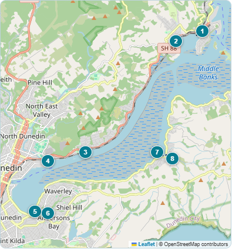

Field handbook
Healthy Harbour Watchers
Observe. Measure. Understand.
Field handbook
Observe. Measure. Understand.
01 · Start here
A few checks before the trip save time at the water's edge and help keep results comparable.
Safety comes first. Stay within the approved access plan. Never enter the water, work alone or board a boat unless your supervisor's risk plan specifically authorizes it. Stop if conditions become unsafe.
02 · Know your site
Use the current site number in Field entry and on every sample label. This map replaces the historical source map.

Remember the sequence: observe → collect bottles → meters → clarity → bed-disturbing work last.
Open the Locations page online for site profiles and live navigation. Map data: OpenStreetMap contributors.
03 · Observe
Conditions help explain a result. Write what you see, not what you think caused it.
Cloud, rain now or recently, wind and air temperature if your method asks for it.
Keep descriptions simple: “light rain”, “strong wind”, “overcast”.
Record the date, visit time and tide stage if known: rising, falling, high or low.
Note the tide-table or station used when your plan requires it.
Describe calm, rippled or wave conditions, plus visible colour or unusual cloudiness.
Glare and chop can affect clarity readings; note them.
From a safe distance, note foam, scum, sheen, unusual odour, discharge, litter or dead animals.
Do not touch, approach or collect an unknown discharge or dead animal. Tell your supervisor.
In Field entry: use the Weather, Tide conditions, Water-surface conditions and Other unusual observations boxes. Brief, factual notes are most useful.
04 · Collect samples
Use the bottle, location, depth and preservation instructions specified for that analysis. Different tests need different handling.
Do not improvise sample handling. If a bottle, label, preservative or storage step is missing or unclear, ask the lab lead before collecting.
Choose representative water as directed by the sampling plan. Avoid scraping the seabed, pylons or algal mats, and avoid water disturbed by your own activity.
05 · Equipment and quality
Consistency matters more than adding extra measurements. Follow the sampling plan and record enough context to repeat the work.
Unusual-value prompts are checks, not limits. Recheck the value and units, but do not change a genuine result just to fit a usual range.
06 · YSI field meters
The available readings depend on the meter and probe fitted. Check the probe label and use the matching manufacturer's manual.
The Pro2030 dissolved-oxygen sensor needs water movement while measuring. Follow its manual for the correct movement.
When fitted with an ODO probe, the ProSolo does not require stirring.
Do not transfer one model's procedure to another. If calibration fails or the value will not stabilize, do not record it as a valid result.
Do not convert or swap mg/L and %. Enter each displayed value into its matching field. Enter adjusted salinity or conductivity only when the fitted probe and approved method provide it, using the method's units.
Oxygen varies with temperature, salinity, tide, time of day and photosynthesis. Interpret results using current local guidance and site context, not a generic threshold alone.
07 · Water clarity
Clarity describes how far light can travel through water. Take clarity readings before any activity that disturbs the seabed.
Use a calibrated meter and the current method. Follow the instrument instructions for sample cells, cleaning and units.
Secchi depth and turbidity are different measurements. Do not convert one into the other.
Check the marked line against a tape before fieldwork and after repeated use. Rinse the disk and line after sampling; store without kinks.
Strong glare, choppy water and low light can reduce repeatability. Record the conditions rather than hiding them.
Order matters: complete Secchi readings before measuring depth or doing other work that may stir bottom sediment.
08 · Other measurements
The form accepts field readings and later lab results. Follow the sampling plan for each parameter; do not assume every meter provides every channel.
Measure representative water with a suitable sensor. Avoid the bottom and wait for a stable value. Record in °C, plus depth or position if the plan asks.
Use the fitted, approved instrument method. If the form asks for adjusted salinity or adjusted specific conductivity, enter that adjusted reading—not an unadjusted value.
Use a calibrated pH instrument and the approved sample method. Wait for a stable reading and record it as displayed. pH may also be added later from the lab.
Measure only when the sampling plan requires it. Depth work can disturb sediment, so do it after water samples and clarity readings.
pH and turbidity can be added later. If the lab reports them after the visit, enter the lab result only with the correct site, date and units.
09 · Laboratory results
These measurements help describe nutrients, microscopic algae and indicator bacteria in the harbour.
Algae and plant growth
A pigment measurement used to estimate phytoplankton biomass. The lab method determines filtration, preservation and analysis.
Phosphorus nutrient
Dissolved reactive phosphorus is a form of phosphorus available to aquatic life. Report the analyte and units required by the lab.
Nitrogen nutrients
Nitrate plus nitrite results help track dissolved nitrogen nutrients. Use the approved lab result and units.
Indicator bacteria
An indicator of possible faecal contamination. It is not a direct count of every harmful organism.
The 2014 laboratory recipes are intentionally omitted. Before collecting a lab sample, get current instructions for bottle type, filtration or preservative, storage temperature, holding time, transport, units and safety.
Do not handle chemical reagents or culture bacteria unless trained and working under an approved laboratory procedure. Keep cultures sealed and follow the lab lead's disposal instructions.
Field entry supports lab results being added later. Leave a result blank until a valid value is available; do not use zero to mean “not measured”.
10 · Field entry
Field entry stores completed samples on the browser and device you used. Nothing is submitted automatically.
Sign in while connected. Open Field entry and wait for the offline-ready message on this device.
Choose the site and date. Enter only measurements you took and add brief site observations.
Save each sample. Check that it appears under Saved samples before moving on.
When online, submit each saved sample for review. It does not send itself.
Submitted data is checked before it appears in the public dataset.
If submission was not confirmed, retry the same saved sample unchanged. Ask the coordinator before editing an uncertain submission.
Offline samples stay on that device. They are not an account backup. Keep the device safe; do not clear site data or use private browsing before submitting.
For privacy, do not put names or personal information in sample observations.
11 · Close the visit
A final check protects the samples and the record.
Read results in context. Tide, rainfall, wind, temperature and time of day can change measurements. A single result is not, by itself, a diagnosis of pollution.
This is a field guide, not a lab manual. Follow the current approved sampling plan, risk assessment, instrument manual and laboratory procedure. Ask your supervisor when anything is unclear.